Tire Repair
Tire Repair
Caution:
^ Tire changing can be dangerous and should be done by trained professionals using proper tools and procedures. Always read and understand any manufacturer's warnings contained in their customers literature or molded into the tire sidewall.
^ Serious eye and ear injury may result from not wearing adequate eye and ear protection while repairing tires.
^ NEVER inflate beyond 275 kPa (40 pounds) pressure to seat beads.
^ NEVER stand, lean or reach over the assembly during inflation.
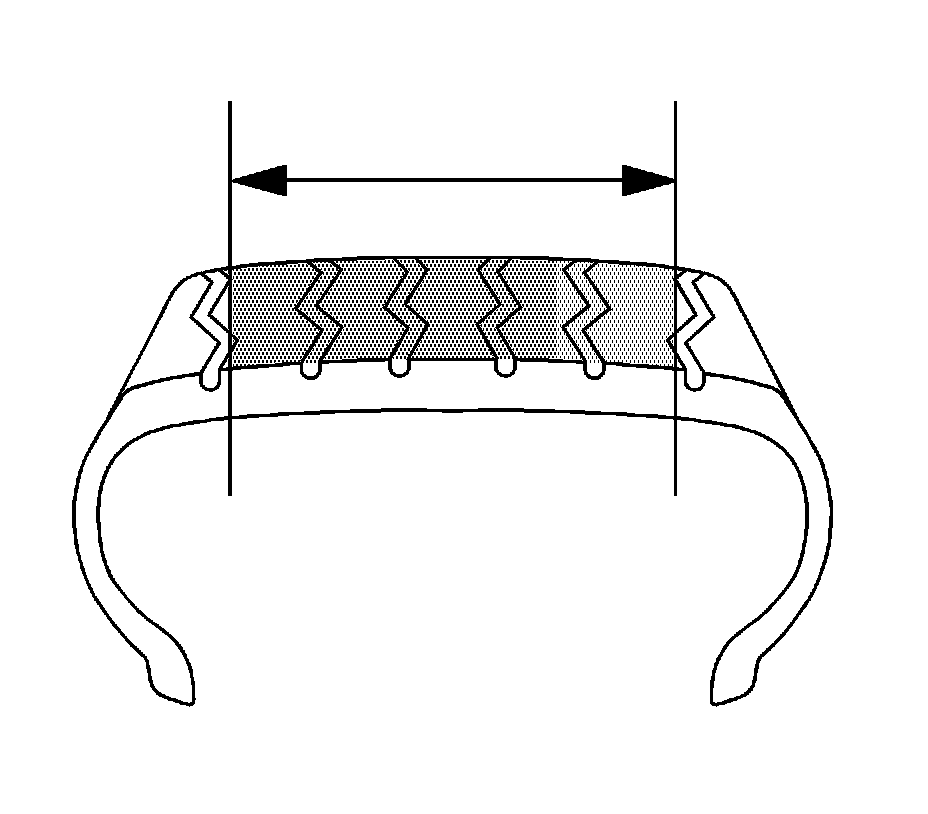
Repairable area on a radial tire.
Important:
^ NEVER repair tires worn to the tread indicators 1.59 mm (2/32 in) remaining depth.
^ NEVER repair tires with a tread puncture larger than 6.35 mm (1/4 in).
^ NEVER substitute an inner tube for a permissible or non-permissible repair.
^ NEVER perform an outside-in tire repair (plug only, on the wheel).
^ Every tire must be removed from the wheel for proper inspection and repair.
^ Regardless of the type of repair used, the repair must seal the inner liner and fill the injury.
^ Consult with repair material supplier/manufacturer for repair unit application procedures and repair tools/repair material recommendations.
Three basic steps for tire puncture repair:
1. Remove the tire from the wheel for inspection and repair.
2. Fill the injury (puncture) to keep moisture out.
3. Seal the inner liner with a repair unit to prevent air loss.
External Inspection
1. Prior to demounting, inspect the tire surface, the valve and the wheel for the source of the leak by using a water and soap solution. Mark the injured area and totally deflate the tire by removing the valve core.
2. Demount the tire from the wheel and place the tire on a well-lighted spreader.
Internal Inspection
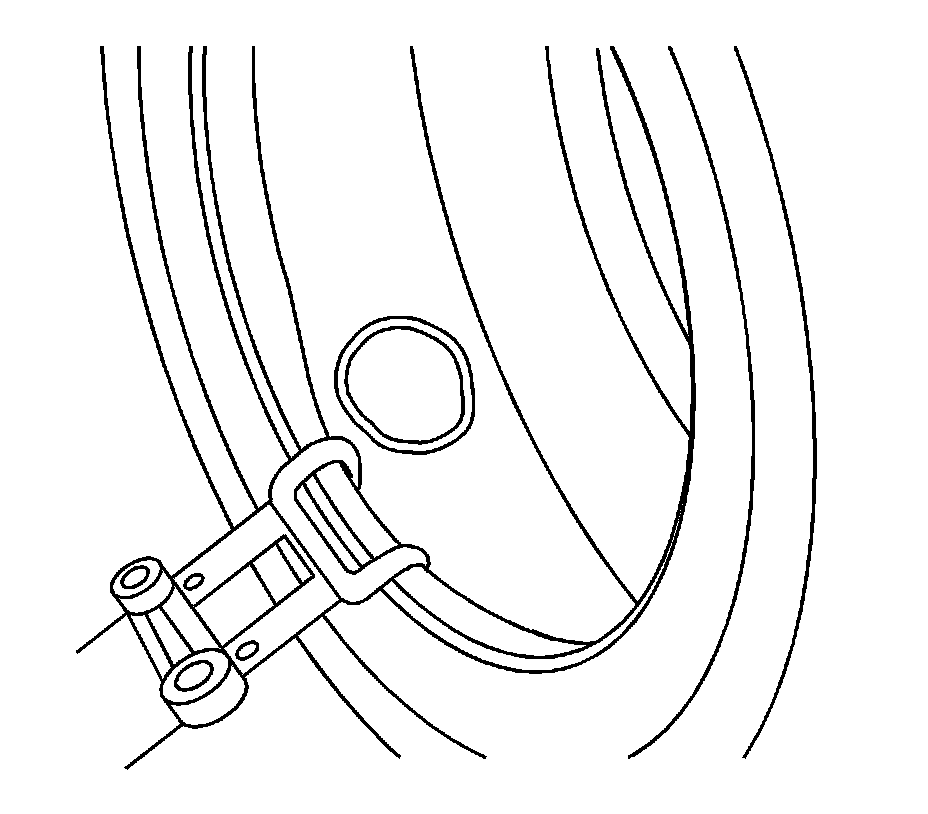
1. Spread the beads and mark the puncture with a tire crayon.
2. Inspect the inner tire for any signs of internal damage.
3. Remove the puncturing object, noting the direction of the penetration.
4. Probe the injury with a blunt awl in order to determine the extent and direction of the injury.
5. Remove any loose foreign material from the injury.
6. Punctures exceeding 6.35 mm (1/4 in) should not be repaired.
Cleaning
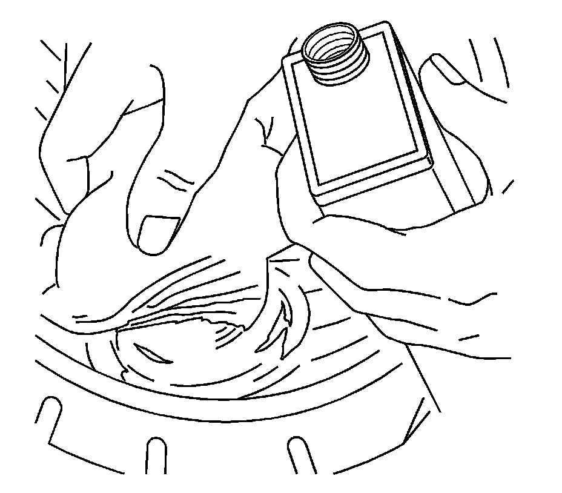
1. Clean the area around the puncture thoroughly with a proper liner cleaner, clean cloth and a scraper. This step serves to remove dirt and mold lubricants to insure proper adhesion and non-contamination of the buffing tool.
2. Refer to information on the product or manufacturer's Material Safety Data Sheet and follow guidelines for handling and disposal.
Clean the Injury Channel
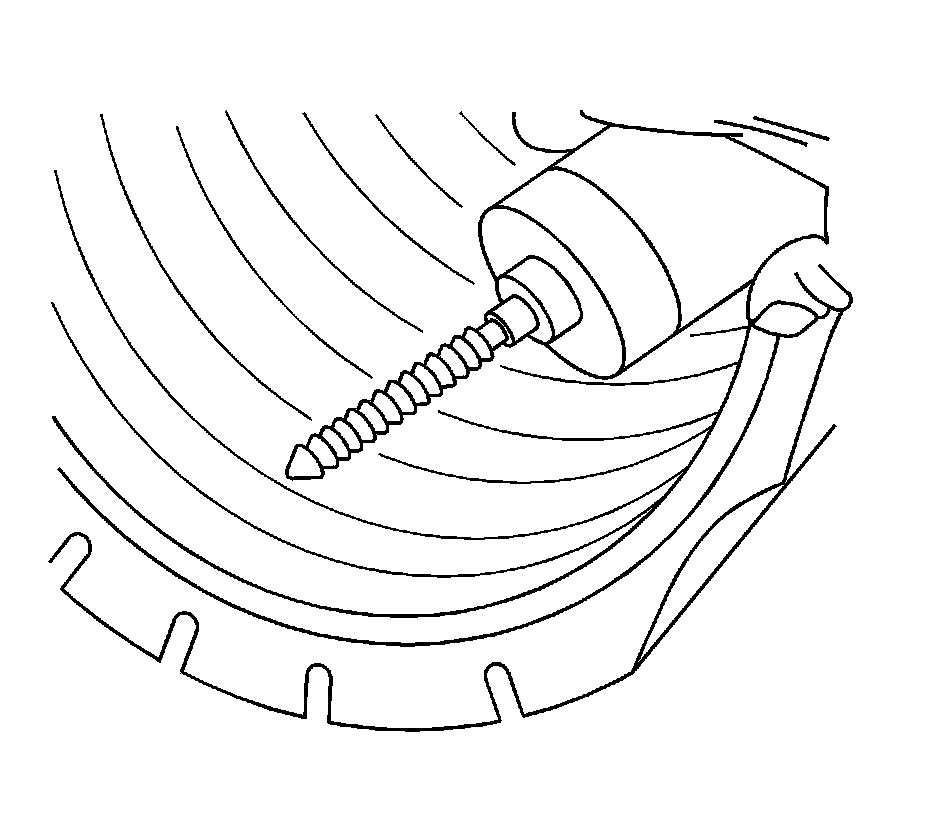
1. Use a proper hand reamer, carbide cutter or drill bit to ream the puncture channel from the inside of the tire in order to clean the injury.
2. Remove steel wires protruding above the liner surface to prevent damage to the repair unit.
3. Consult your repair material supplier for recommended reaming tool(s).
Fill the Injury
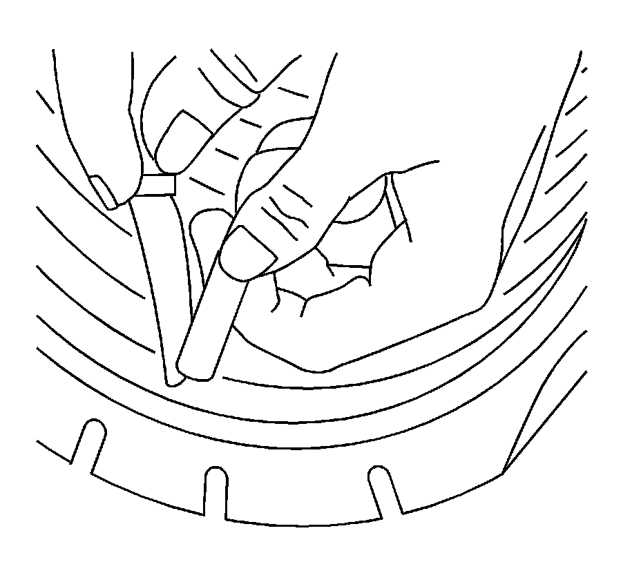
1. It is necessary to fill the injury channel to provide back up for the repair unit and to prevent moisture from entering the tire fabric and steel wires.
2. For combination repair/plug units skip this step. Cement the injured channel and fill the injury from the inside of the tire with the repair plug per repair material manufacturer's recommendations. Without stretching the plug, cut the plug off just above the inside tire surface.
3. Consult your repair material supplier for proper repair material selection.
Repair Unit Selection
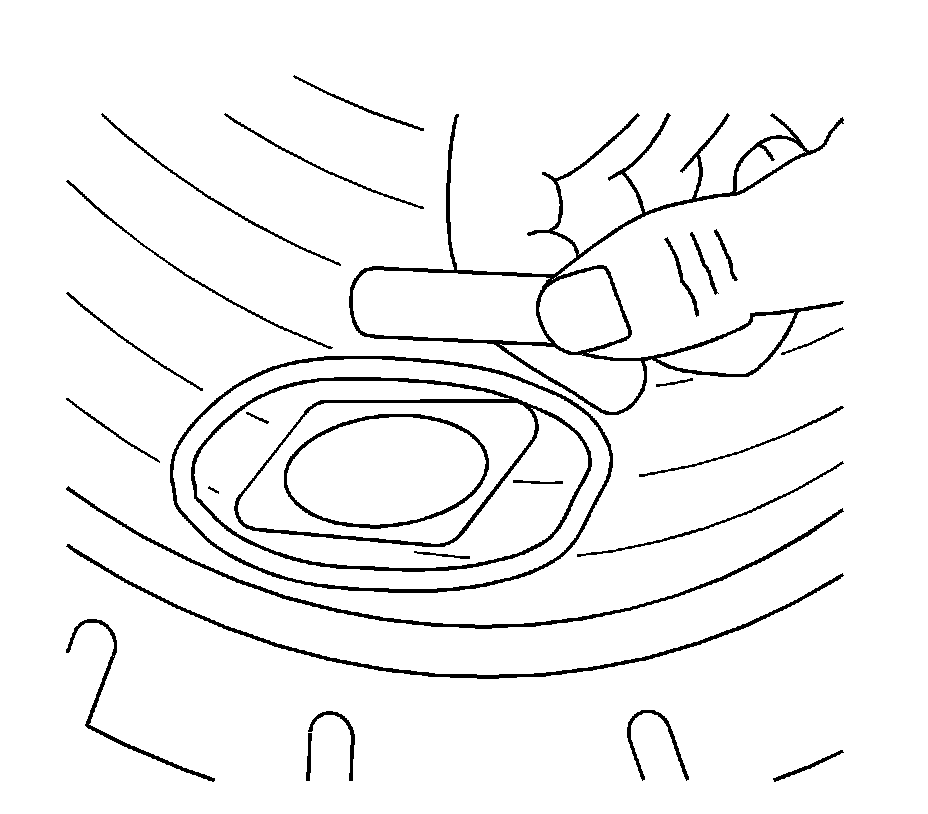
Important: Do not install the repair unit in this step.
1. Center the repair unit over the injury as a reference and outline an area larger than the unit so that buffing will not remove the crayon marks.
2. Remove the repair unit.
3. DO NOT overlap previous or multiple repair units.
4. Consult your repair material supplier for proper repair unit selection.
Buffing
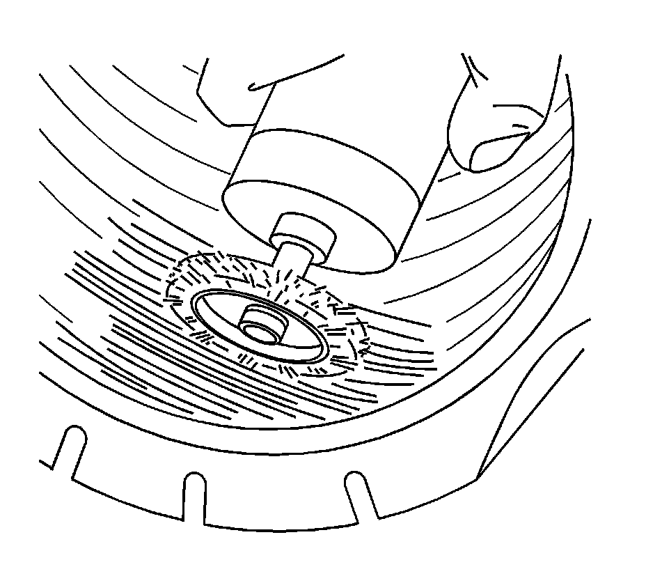
1. To prevent contamination and preserve the outline, buff within the marked area thoroughly and evenly with a low speed buffing tool using a fine wire brush or gritted rasp.
2. Buff to a smooth velvet surface (RMA #1 or #2 buffed texture).
3. Use caution not to gouge the inner liner or expose casing fabric.
4. Remove any buffing dust with a vacuum cleaner.
5. Consult your repair material supplier for a proper buffing tool.
Cementing
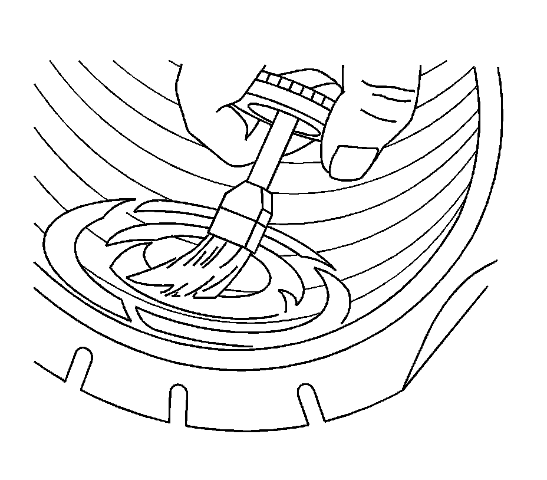
Apply chemical cement according to the repair material manufacturer's procedures.
Repair Unit Application
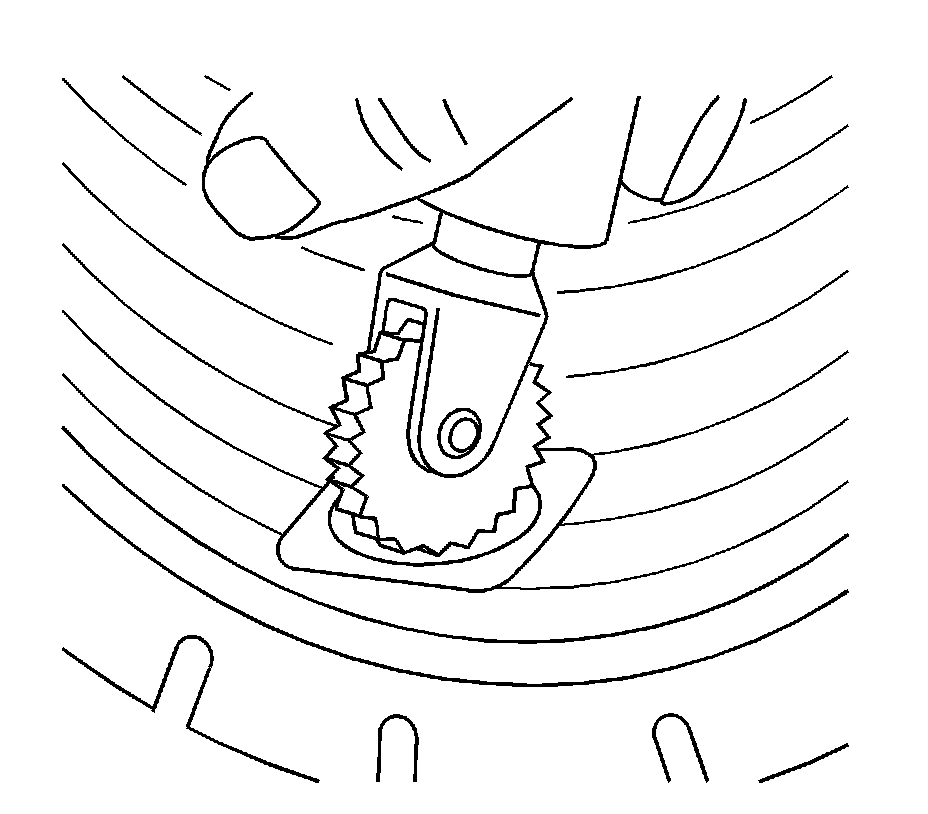
The tire must be in the relaxed position when the repair unit is installed. Do not spread the beads excessively.
Two-Piece Plug and Repair Units
1. If applicable, install the repair unit so that the alignment is correct.
2. Center the repair unit over the injury and stitch down thoroughly with the stitching tool, working from the center out.
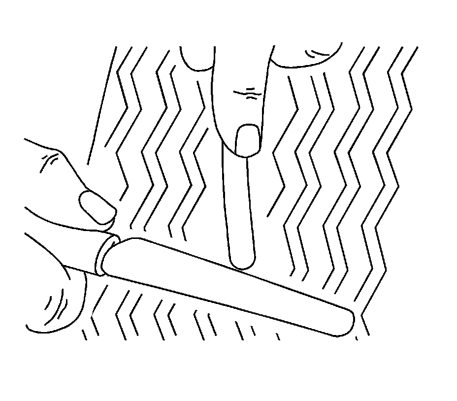
3. Being careful not to stretch the plug material, cut the plug flush with the outer tread.
Combination Repair/Plug Units
1. Pull the plug through the injury until the repair just reaches the liner. Stitch down thoroughly.
2. Follow the repair material manufacturer's recommendations for further installation instructions.
Consult your repair material supplier for the proper stitching tool.
Safety Cage
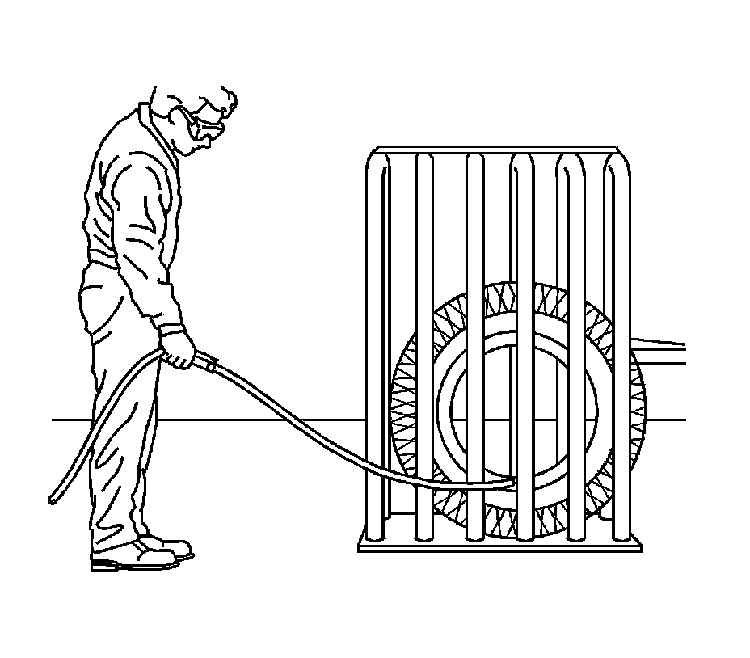
Some run flat tires, such as the Goodyear Extended Mobility Tire (EMT) used on the Corvette, may require more than 275 kPa (40 psi) to seat the bead. In such a case, a tire safety cage must be used. Consult the tire manufacturer for its individual repair policy.
Final Inspection
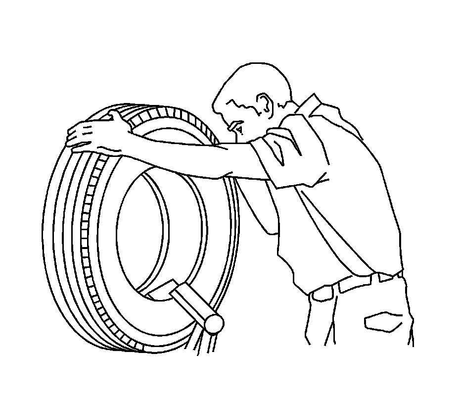
1. After remounting and inflating the tire, check both beads, the repair and the valve with a water and soap solution in order to detect leaks.
2. If the tire continues to lose air, the tire must be demounted and reinspected.
3. Balance the tire and wheel assembly. Refer to Tire and Wheel Assembly Balancing - Off Vehicle.
For additional tire puncture repair information, contact:
Rubber Manufacturers Association (RMA)
1400 K Street, N.W., Suite 900
Washington, DC
20005-2403
Telephone: 202-682-4800
E-mail: info@rma.org
Website: www.rma.org